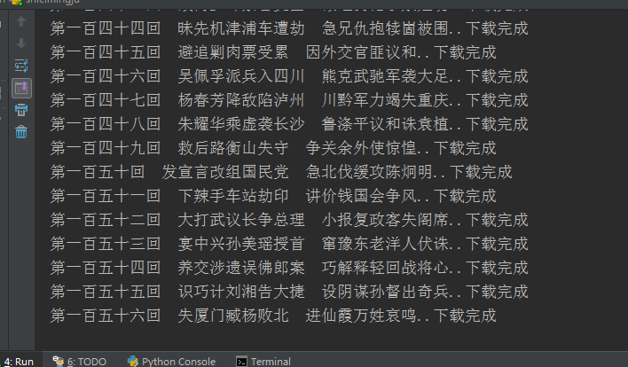
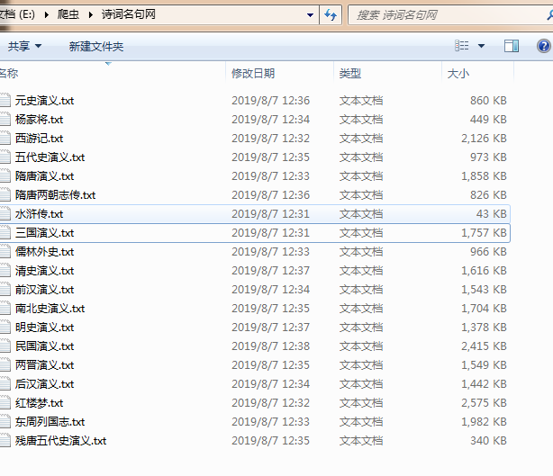
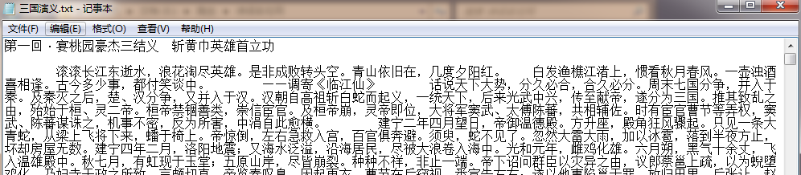

# 需要的库
from lxml import etree
import requests
# 请求头
headers = {
'User-Agent': 'Mozilla/5.0 (Windows NT 6.1; WOW64) AppleWebKit/537.36 (KHTML, like Gecko) Chrome/65.0.3325.181 Safari/537.36'
}
# 保存文本的地址
pathname=r'E:\爬虫\诗词名句网\\'
# 获取书籍名称的函数
def get_book(url):
response = requests.get(url,headers)
etrees = etree.HTML(response.text)
url_infos = etrees.xpath('//div[@class="bookmark-list"]/ul/li')
for i in url_infos:
url_info = i.xpath('./h2/a/@href')
book_name = i.xpath('./h2/a/text()')[0]
print('开始下载.'+book_name)
# print('http://www.shicimingju.com'+url_info[0])
get_index('http://www.shicimingju.com'+url_info[0])
# 获取书籍目录的函数
def get_index(url):
response = requests.get(url, headers)
etrees = etree.HTML(response.text)
url_infos = etrees.xpath('//div[@class="book-mulu"]/ul/li')
for i in url_infos:
url_info = i.xpath('./a/@href')
# print('http://www.shicimingju.com' + url_info[0])
get_content('http://www.shicimingju.com' + url_info[0])
# 获取书籍内容并写入.txt文件
def get_content(url):
response = requests.get(url, headers)
etrees = etree.HTML(response.text)
title = etrees.xpath('//div[@class="www-main-container www-shadow-card "]/h1/text()')[0]
content = etrees.xpath('//div[@class="chapter_content"]/p/text()')
content = ''.join(content)
book_name=etrees.xpath('//div[@class="nav-top"]/a[3]/text()')[0]
with open(pathname+book_name+'.txt','a+',encoding='utf-8') as f:
f.write(title+'\n\n'+content+'\n\n\n')
print(title+'..下载完成')
# 程序入口
if __name__ == '__main__':
url = 'http://www.shicimingju.com/book/'
get_book(url)控制台查看下载过程；

打开文件夹查看是否下载成功；


done.